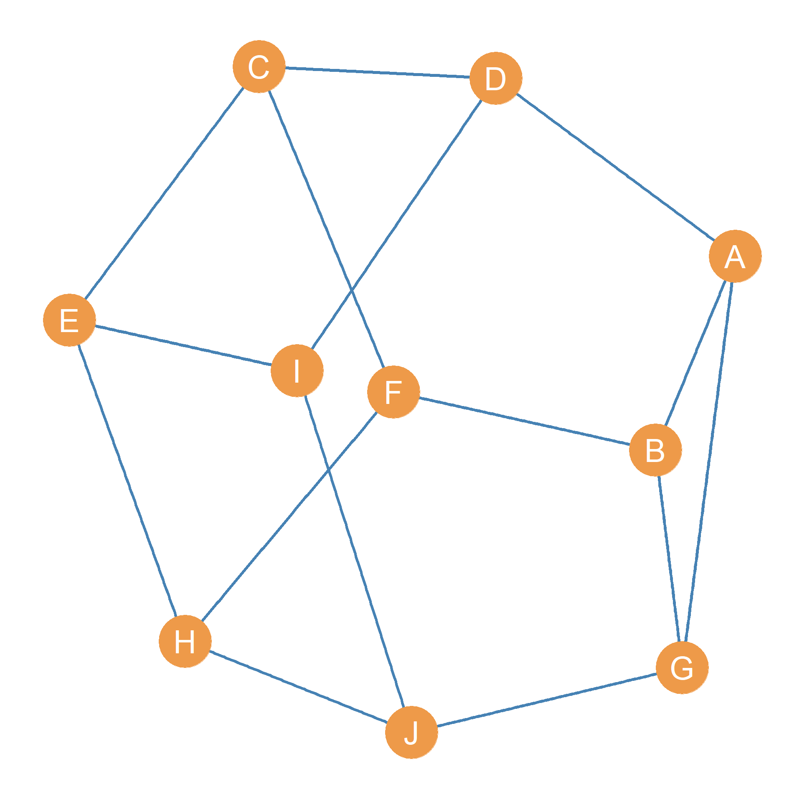

9 Degree-Based Graph Metrics
Many graph metrics are based on the degrees of the node in graph (as defined in sec-degree). Here we cover the most important.
9.1 The Graph Degree Set
Computing the degree of each node in the network gives us a vector (called k), containing the degree of each node. The vector is of “length” n where this is the number of nodes in the network. This is called the graph’s degree set, written k.
What is a vector? A vector is a sequence of numbers. Thus, \((1, 2, 3, 4)\) is a vector, and so is \((0, 1, 1, 0, 1, 1, 1)\) and \((0.23, 0.39, 0.89)\). The length of a vector is the numbers of elements in it. Thus, the length of the vector \((1, 2, 3, 4)\) is 4 and the the length of the vector \((0, 1, 1, 0, 1, 1, 1)\) is 7. When vectors are considered as sets of numbers, the length of the vector is equivalent to the cardinality of the set defined by the vector.
As you may have already figured out, there are as many members of this set as there are nodes in the graph, so the cardinality of the degree set is the same as that of graph’s node set \(|\mathbf{k}| = |V|\).
Let’s consider the graph shown in Figure fig-undirected again. The graph’s degree set k is shown in Table tbl-degset.
| A | B | C | D | E | F | G | H | I |
|---|---|---|---|---|---|---|---|---|
| 4 | 3 | 4 | 5 | 3 | 4 | 3 | 3 | 3 |
Table 9.1: The degree set of an undirected graph.
9.2 The Graph Degree Sequence
When we list the members of the degree set (each node’s degree) in decreasing order from bigger to smaller, this is called the graph’s degree sequence, and it is written d. Every graph has its own degree sequence, but graphs with very different structure (in terms of other graph metrics) can have the same degree sequence (Kim et al. 2009).
It is easy to see that if we order the values of the degree set from higher to lower, we would obtain the following degree sequence:
| 5 | 4 | 4 | 4 | 3 | 3 | 3 | 3 | 3 |
Table 9.2: The degree sequence of an undirected graph.
9.3 Minimum and Maximum Degree
When studying a network, we are usually interested in the range of connectivity of people. What is the most connections somebody has in the network? What is the smallest set of neighbors someone has? These two graph metrics are called the maximum and minimum degree respectively. And are written \(k_{max}\) and \(k_{min}\). They are given by taking the maximum or the minimum values of the graph degree set describing the network:
\[ k_{max} = max(\mathbf{k}) \tag{9.1}\]
\[ k_{min} = min(\mathbf{k}) \tag{9.2}\]
To go back to our running example of the graph shown in Figure fig-undirected, it is easy to see from the degree set shown in Table tbl-degset, that for this network, \(k_{max} = 5\), and \(k_{min} = 3\). The difference between these numbers gives us a sense of the heterogeneity or gap between the connectivity of the best connected and the least well connected nodes in the graph. This is called the degree range, and it is written \(k_r\):
\[ k_r = k_{max} - k_{min} \tag{9.3}\]
In this case, \(k_r = 5 - 3 = 2\), which tell us than in this graph, the difference between the best and most poorly connected nodes is really not that large. Most nodes have a fair number of links to others.
9.4 The Sum of Degrees
Note that if we know the degree set of an undirected graph, we can figure out how many total edges there are in the graph. The reason for this is that the degree of each node can be defined in terms of the total number of edges incident on the node (as we noted earlier). So that means that if we know each node’s degree, then we can also know how many total edges there are in the graph.
The first step we need to do is compute the sum of degrees of each node in the graph. This quantity is written \(\sum_i k_i\). For the degree set of the graph shown in Figure fig-undirected, we can see that the sum of the degrees \(\sum_i k_i = 32\) (go ahead use a calculator to add up all the numbers in Table tbl-degset).
If you go back to the graph shown in Figure fig-undirected and count the number of lines, you can see that there are 16. So summing up the degrees of each node ended up totaling twice the number of edges shown in the graph: \(16 \times 2 = 32\). The reason for this is that each edge is incident (touches) two nodes, so it makes sense that when you add up the degrees of each node you end up with twice the amount of lines shown in the visual representation of the graph.
So the relationship between the sum of the degrees and the number of edges in an undirected graph is one of simple doubling. In equation form, this is written:
\[ \sum_i k_i = 2m \tag{9.4}\]
Where m is the cardinality of the graph’s edge set \(|E|\). Some people call this the first theorem of graph theory (Benjamin, Chartrand, and Zhang 2015, 20)!
Another way to think about why we end up with twice the number of edges, is that in an undirected graph \(G\), if node A is a member of the set of neighbors of node B, then node B is necessarily also a member of the set of neighbors of node A. Thus, when computing the degree of each node, the edge AB does double duty, counting for the computation of both node A and node B’s degree scores, when we sum the degrees the edge thus shows up twice. Note that in the directed case we don’t have that problem, in which case \(\sum_i k_i = m\).
Knowing the link between the sum of degrees and the number of edges, we can begin to calculate some other important graph metrics.
9.5 The Average Degree
9.5.1 Average Degree in Undirected Graphs
Once we know what sum of the degrees is, we can compute an important graph metric called the average degree. This gives us a sense of whether there are lots of well-connected nodes in the graph (in which case the average degree is high), or whether the typical node in the graph only has a small number of neighbors (in which case the average degree is low).
To get the average degree for a graph, written \(\bar{k}\), all we need to do is compute the sum of degrees (like earlier) and divided it by the total number of nodes in the graph:
\[ \bar{k} = \frac{\sum_i k_i}{n} \tag{9.5}\]
In an undirected graph G like the one shown in Figure fig-undirected, the graph average degree is given by twice the total number of symmetric ties (the cardinality of the edge set as defined earlier) divided by the total number of nodes (the cardinality of the node node set). Because of the identity identified in Equation eq-sumki, where \(\sum_i k_i = 2m\), we can also write the formula for the average degree as follows by switching the numerator:
\[ \bar{k} = \frac{2m}{n} \]
For Figure fig-undirected, the average degree of the graph is:
\[ \bar{k} = \frac{2m}{n} = \frac{2 \times 16}{9} = \frac{32}{9} = 3.6 \tag{9.6}\]
9.5.2 Average Degree in Directed Graphs
We can use a variation of the same procedure to compute the average degree in directed graphs. Take the directed graph shown in Figure fig-directed, which has seven nodes and 11 edges. In this case, there is no need to “double” the number of lines as in the case of an undirected graph.
We could compute either the average indegree or the average outdegree of each node and it would give us the same answer, because each link unless does single duty in determining either the outdegree or indegree of each node. Accordingly, the average degree in the directed case is:
\[ \bar{k} = \frac{m}{|V|} = \frac{m}{n} = \frac{ 11}{7}=1.6 \tag{9.7}\]
Even easier!
Although straightforward, the graph average degree provides a powerful tool to analyze the social world. For example, if we have two school clubs of the same size and we ask students who they are friends with in the club, we might get very different average degrees. Let us assume that the average degree in the first network is two, while in the second network it is five.
This statistic informs us that people in the second network have more friends within the group than in the first network. If we are interested in why the first group failed and the second group kept meeting, we might understand that the underlying social relations of friendship, which might be theorized as contributing to the clubs survival, were weaker in the first group to begin with than they were in the second group. We are thus able to gain insight into the causes and/or underlying conditions that shape the social world.
9.5.3 The Connection Between Density and Average Degree
There is an intimate mathematical relationship between the graph density and the graph average degree. Let’s see what it is.
Take another look at Equation eq-dens1. It says that density is equal to:
\[ d(G)^u = \frac{2m}{n(n-1)} \tag{9.8}\]
We can write the same equation as the product of two different fractions. Like this:
\[ d(G)^u = \frac{2m}{n} \times \frac{1}{n-1} \tag{9.9}\]
Now, take a look at the first (left-hand) fraction of this product. Does it look familiar? It should, because it is the formula for the average degree we wrote down in Equation eq-avgdeg1!
So that means that if we know the average degree and we know the number of nodes in a graph, we also know the density of the graph without knowing anything about the number of edges. Mathematical magic.
How do we do that? Well, substituting the fraction \(\frac{2m}{n}\) for its equivalent, the average degree \(\bar{k}\), in Equation eq-dens4 we get:
\[ d(G)^u = \bar{k} \times \frac{1}{n-1} = \frac{\bar{k}}{n-1} \tag{9.10}\]
So this formula tells us that the density of a graph is equivalent to its average degree divided by the number of nodes minus one. Pretty simple!
9.6 Advanced Degree Metrics Topics
9.6.1 Degree Variance
Once we know the average degree of a graph, it is possible to compute more complex measures of the heterogeneity in connectivity across nodes (e.g., the extent to which there is a very big spread between well-connected and not so well-connected nodes in the graph) beyond the simpler measures of range such as the difference between \(k_{max}\) and \(k_{min}\).
One such measure was proposed by the sociologist and statistician Tom Snijders in a paper written in 1981 (Snijders 1981). It is called the degree variance of the graph. It is written \(\mathcal{v}(G)\) and it is defined as the average squared deviation between the degree degree of each node and the average degree:
\[ \mathcal{v}(G) = \frac{\sum_i (k_i - \bar{k})^2}{n} \tag{9.11}\]
The equation says that to compute the degree variance, first we create a vector of the square of the difference between each node’s degree and the average degree of the graph \((k_i - \bar{k})^2\), then we sum all the values in this vector (note that since we are squaring all these values will be a positive number), and divide the result by the total number of nodes \(n\).
To compute the degree variance of the graph shown in Figure fig-undirected using Equation eq-degvar, we can thus go through the following steps.
- First we compute the vector of differences between each node’s degree \(k_i\) (shown in Table tbl-degset) and the average degree \(\bar{k}\) (already computed in Equation eq-avgdeg2). This yields the following vector:
| A | B | C | D | E | F | G | H | I |
|---|---|---|---|---|---|---|---|---|
| 0.44 | -0.56 | 0.44 | 1.44 | -0.56 | 0.44 | -0.56 | -0.56 | -0.56 |
Table 9.3: Differences between the degree of each node and the average degree.
- Then we square each of these numbers \((k_i - \bar{k})^2\), which results in the following vector of squared deviations:
| A | B | C | D | E | F | G | H | I |
|---|---|---|---|---|---|---|---|---|
| 0.2 | 0.31 | 0.2 | 2.09 | 0.31 | 0.2 | 0.31 | 0.31 | 0.31 |
Table 9.4: Squred differences between the degree of each node and the average degree.
- Then we compute the sum of all these numbers \(\sum_i (k_i - \bar{k})^2\), which is 4.2.
- Finally, we divide this sum by the number of nodes in the graph, which gives us:
\[ \mathcal{v}(G) = \frac{4.2}{9} = 0.47 \]
The degree variance is supposed to capture the extent to which there is inequality in the connectivity of nodes in a graph. Inequality exists when a few nodes have a lot of connections and most nodes only have a few. The more inequality, the higher the degree variance. This means that in graphs where there is very little variation in the connectivity of each node (all nodes have roughly the same number of connections), the degree variance should be at a minimum.
The most extreme version of the low inequality case is shown in Figure fig-regular. This graph has ten nodes, and every node has the same degree \(k = 3\), which means that the average degree is also the same number \(\bar{k} = 3\). This is called a regular graph.
Because \(k - \bar{k} = 3 - 3 = 0\) for all nodes in the regular graph, The degree variance of a regular graph is always zero. Regular graphs are referred to by their node degree and their order as k-regular graphs of order n. So, the example shown in Figure fig-regular is a three-regular graph of order ten.
9.6.2 Node Average Nearest Neighbor Degree
Just in the same way we can compute the degree of each node, we may be interested in in the question of whether nodes in the network tend to connect to others of high degree, or whether the connections in the network occur at random, irrespective of degree. The first situation, where people tend to connect to other people of high degree is called preferential attachment in network science (Barabási and Albert 1999). It is also referred to as a popularity tournament structure in sociology (Waller 1937). If you went to a real live high school, you may know how this works.
To get a sense of whether a given node prefers to connect to others who also have a large number of connections, we can compute an index called the average nearest neighbor degree, which is conventionally written \(\bar{k}_{nn(i)}\).
This is given by the following formula:
\[ \bar{k}_{nn(i)} = \frac{1}{k_i} \sum_{j \in \mathcal{N(i)}} k_j \tag{9.12}\]
The formula says that to compute the knn of node i we take sum of the degrees of each of their neighbors j (remember that \(j \in \mathcal{N(i)}\) means “as long as node j belongs to the set \(N(i)\)”), and then divide it by the degree of node i.
| A | B | C | D | E | F | G | H | I |
|---|---|---|---|---|---|---|---|---|
| 3.8 | 4.3 | 3.8 | 3.6 | 4.3 | 3.5 | 3.3 | 3.3 | 3.3 |
Table 9.5: Average nearest neighbor degree of nodes in an undirected graph
As an example, the \(\bar{k}_{nn(i)}\) for each node in the undirected graph shown in Figure fig-undirected are shown in Table tbl-knn. This is the vector of average nearest neighbor degrees for the graph \(k_{nn}\). The table tells us that, nodes B and and E seem to have the strongest tendencies to connect to others who are also popular, while G, H, and I display the weakest such tendencies.
But how the we know if a \(\bar{k}_{nn(i)} = 4.3\) is a big number or a small number? Well, we can compare each node’s \(\bar{k}_{nn(i)}\) to the average degree (\(\bar{k}\)) as defined previously. If a node’s \(\bar{k}_{nn(i)}\) is bigger than the average degree of the graph, then we can say that their neighbors are more likely to be popular than expected by chance. For instance, we know, from the calculation shown in Equation eq-avgdeg2, that the average degree for this graph is 3.6, so a \(\bar{k}_{nn(i)} = 4.3\) tells us that a node connects to others that are (on average) more popular than the average person.
9.6.3 The Graph’s Average Nearest Neighbor Degree
If we take the average of the average nearest neighbor degree vector for each node shown in Table tbl-knn, this would give us the graph’s average nearest neighbor degree (\(\bar{k}_{nn}\)). But what could this possibly mean? Well, this would tell us the typical number of friends that the typical friend of the typical node in the graph has! Essentially, the expected number of friends of friends of the average person.
In a mind-bending paper, the sociologist Scott Feld (1991) showed, that with very few exceptions (e.g., regular graphs), the average number of friends of the typical person (the graph’s average degree) is smaller than the average number of friends of friends of the typical person in the same social network (the graph’s average nearest neighbor degree). That is, your friends have more friends than you do. Don’t get depressed. This is just how social networks work.
Check it out for yourself! If we compute the graph’s average nearest neighbor degree from the numbers in the vector shown in Table tbl-knn, this would give us \(\bar{k}_{nn} = 3.7\) which is larger than the same graph’s average degree we computed earlier (\(\bar{k} = 3.6\)). Weird!
References
Barabási, Albert-László, and Réka Albert. 1999. “Emergence of Scaling in Random Networks.” Science 286 (5439): 509–12.
Benjamin, Arthur, Gary Chartrand, and Ping Zhang. 2015. The Fascinating World of Graph Theory. Princeton University Press.
Feld, Scott L. 1991. “Why Your Friends Have More Friends Than You Do.” American Journal of Sociology 96 (6): 1464–77.
Kim, Hyunju, Zoltán Toroczkai, Péter L Erdős, István Miklós, and László A Székely. 2009. “Degree-Based Graph Construction.” Journal of Physics A: Mathematical and Theoretical 42 (39): 392001.
Snijders, Tom AB. 1981. “The Degree Variance: An Index of Graph Heterogeneity.” Social Networks 3 (3): 163–74.
Waller, Willard. 1937. “The Rating and Dating Complex.” American Sociological Review 2 (5): 727–34.